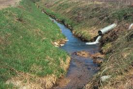

Rural Networks
Explore Drainage Networks in Rural Areas
Overview of Rural Drainage Networks: Rural drainage networks manage excess water in non-urban areas, preventing flooding, protecting farmlands, and maintaining road accessibility.

Types of Rural Drainage Networks:
- Surface Drainage: Channels and ditches redirect rainwater.
- Subsurface Drainage: Pipes drain excess underground water.
- Contour Drainage: Built along natural land contours to prevent erosion.
- Wetland Drainage: Converts marshy lands into usable spaces.
Importance of Maintenance:
- Ensures soil stability and prevents erosion.
- Supports agricultural productivity by preventing waterlogging.
- Enhances road safety and longevity.

Challenges in Rural Drainage Management:
- Limited Funding: Rural areas often lack financial resources.
- Unplanned Development: Leads to inefficient drainage systems.
- Natural Barriers: Vegetation and sediment can block drainage paths.
- Climate Variability: Seasonal changes impact water flow.
Conclusion: Efficient rural drainage management is essential for sustainable agriculture and infrastructure. Proper planning and maintenance can mitigate water-related issues effectively.